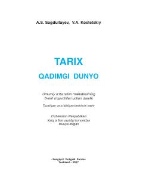

TQ6-sinf o'quvchilari uchun qadimgi dunyo tarixi bo'yicha rasmiy darslik.
Ushbu darslik umumiy o'rta ta'lim maktablarining 6-sinf o'quvchilari uchun mo'ljallangan bo'lib, qadimgi dunyo tarixi, ibtidoiy jamiyat, qadimgi Sharq, O'rta Osiyo, Yunoniston va Rim sivilizatsiyalarini yoritadi. Kitobda eng qadimgi tuzumdan tortib Rim imperiyasining qulashigacha bo'lgan davrdagi muhim tarixiy jarayonlar va madaniy meros batafsil bayon etilgan.